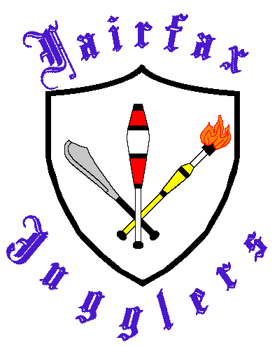

|
Fairfax Jugglers
Meetings
Club Meetings are held
Thursdays, 7:00-9PM
We are currently meeting at Fairfax county libraries.
Location change based on room availability.
- 11/20 George Mason regional library 7-9pm
- 12/11 George Mason regional library 7-9pm
- 12/18 George Mason regional library 7-9pm
- 01/08/2026 George Mason regional library 7-9pm
- 01/15/2026 George Mason regional library 7-9pm
|